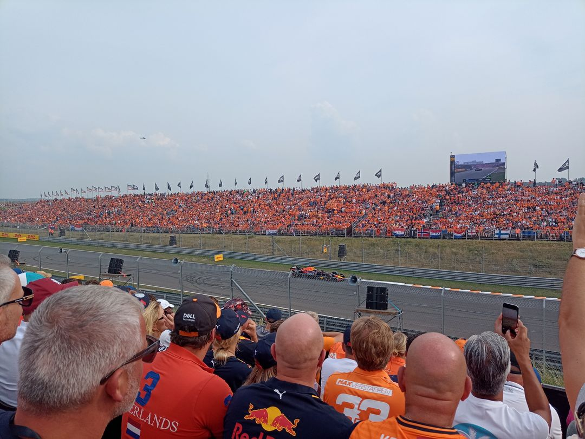
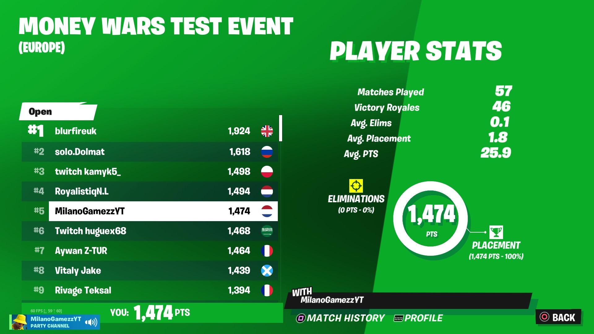
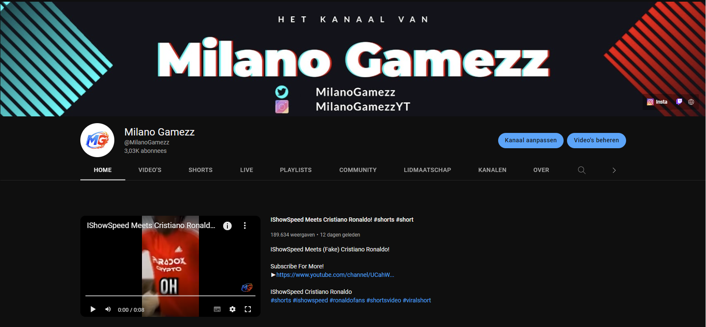
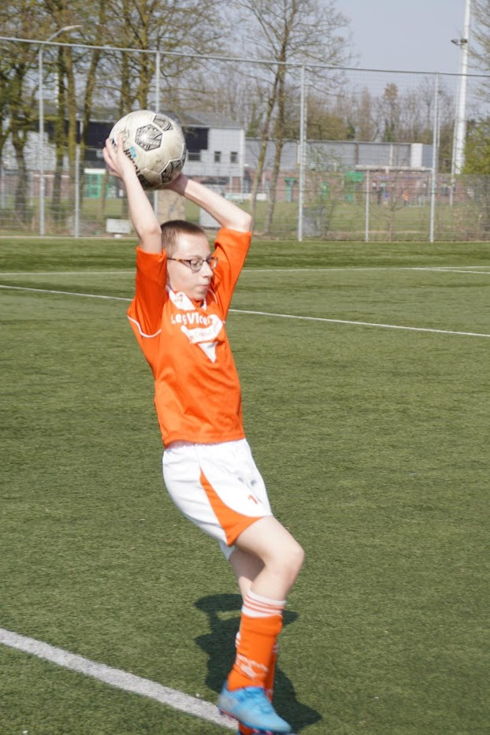

F1
- Ik begon met F1 kijken omdat mijn oma zei dat ik het ook leuk zou vinden dus sinds 2017 keek ik
- Mijn favoriete team is altijd Red Bull Racing omdat Max Verstappen rijd en ik support hem
- In 2019 kreeg ik te horen dat ik naar de Dutch GP ga in 2020 maar door corona ging die niet door
- Dus uiteindelijk gingen we in 2021 naar de Race en in 2022 kregen we weer te horen om naar de race te gaan

Gaming
Games die ik speel:
- Call Of Duty
- F1
- Fortnite
- Super Mario
- Pokemon

YouTube
- Sinds 2020 maak ik fortnite streams/videos en dat ging erg goed, ik had mijn kanaal wel sinds 2014 en nu gebruik ik nog steeds dezelfde naam
- Milano Gamezz begon eigenlijk in 2016 omdat ik bij een vriend van mij streamde maar toen stopte het
- In 2020 op 30 april kwam er iemand in mijn chat genaamd Mex en hij hielp mij met mijn kanaal, daar ben ik nog steeds blij mee
- Op 16 augustus 2020 haalde ik de 1000 abonnees
- Op 16 maart 2022 haalde ik de 2000 abonnees
- En vervolgens op 26 november 2022 haalde ik de 3000 abonnees door een video die 190k weergaven heeft

Voetbal
- Ik was een voetballer en ik speel bij een club genaamd Oranje wit
- Ik speelde JO-16
- Ik ben een aanvaller
- Ik ben een rechtsbenige speler
- Ik ben een goede dribbelaar en ik ben een goede schutter
